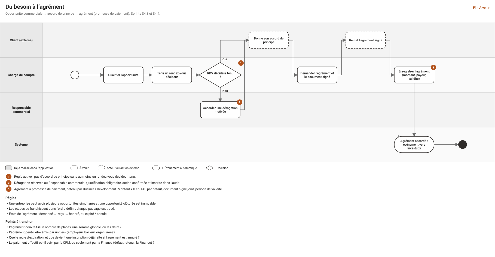
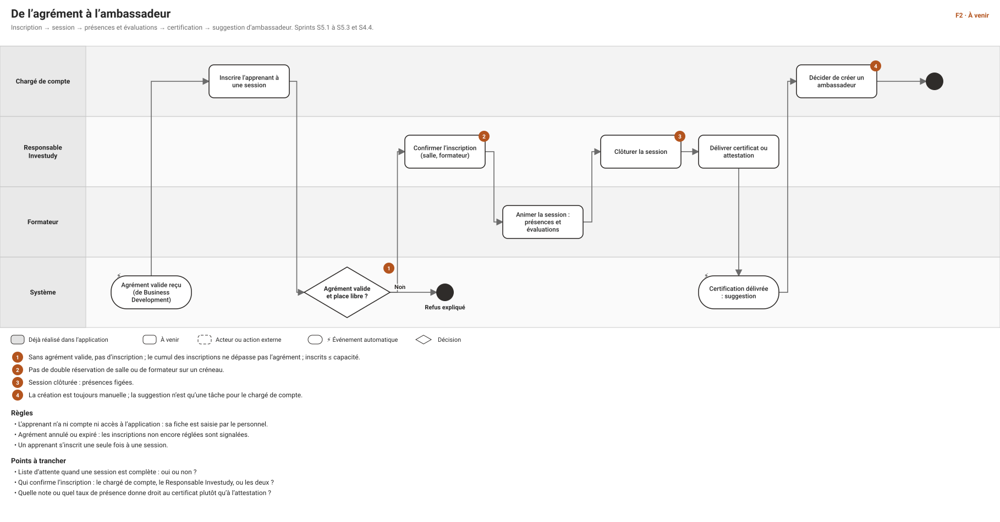
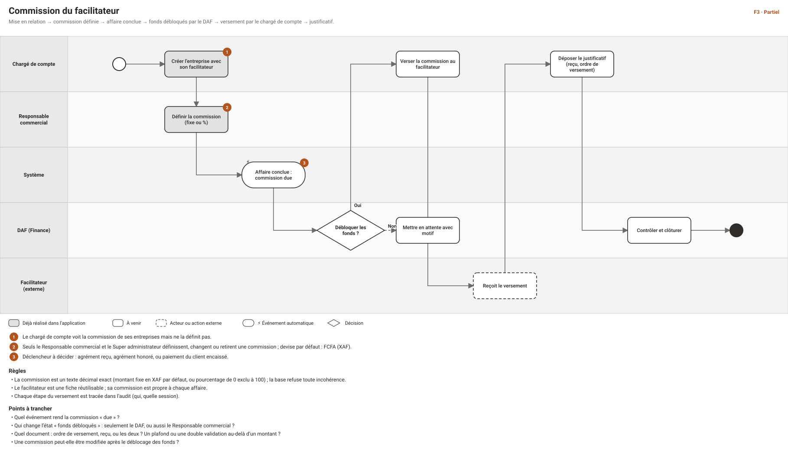
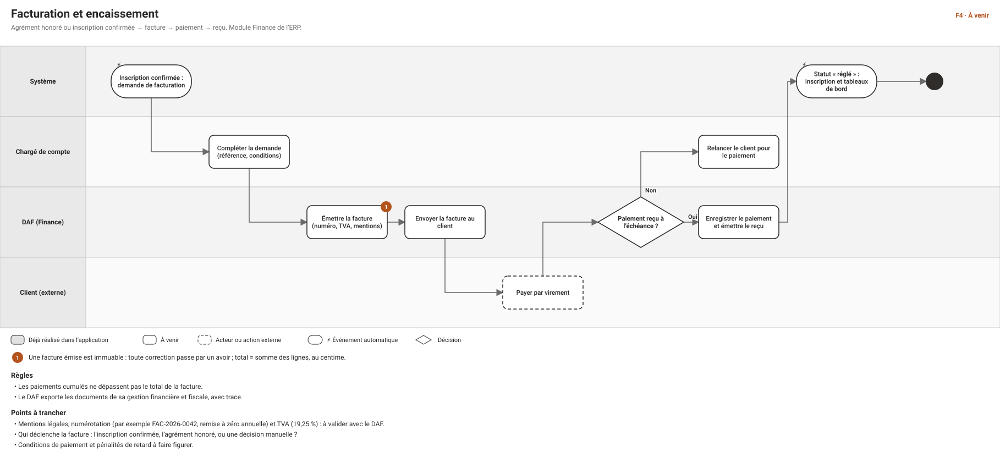
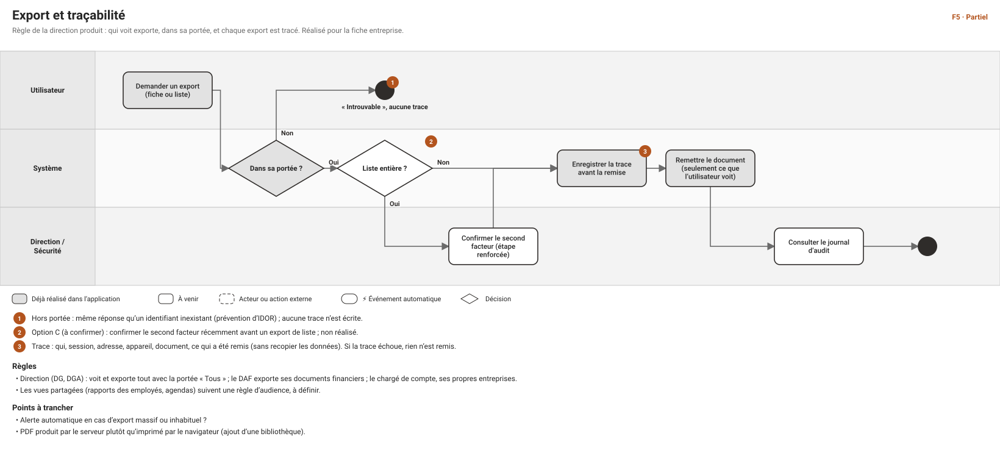
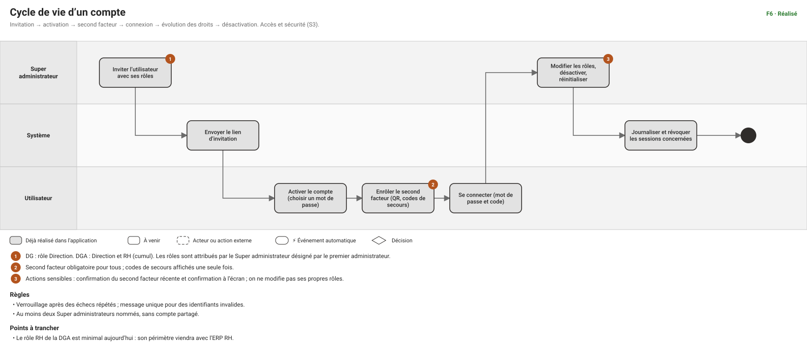
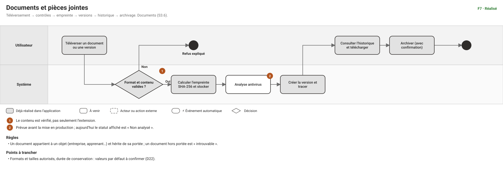

F1 · Du besoin à l’agrémentÀ VENIR
Opportunité commerciale → accord de principe → agrément (promesse de paiement). Sprints S4.3 et S4.4.

F2 · De l’agrément à l’ambassadeurÀ VENIR
Inscription → session → présences et évaluations → certification → suggestion d’ambassadeur. Sprints S5.1 à S5.3 et S4.4.

F3 · Commission du facilitateurPARTIEL
Mise en relation → commission définie → affaire conclue → fonds débloqués par le DAF → versement par le chargé de compte → justificatif.

F4 · Facturation et encaissementÀ VENIR
Agrément honoré ou inscription confirmée → facture → paiement → reçu. Module Finance de l’ERP.

F5 · Export et traçabilitéPARTIEL
Règle de la direction produit : qui voit exporte, dans sa portée, et chaque export est tracé. Réalisé pour la fiche entreprise.

F6 · Cycle de vie d’un compteRÉALISÉ
Invitation → activation → second facteur → connexion → évolution des droits → désactivation. Accès et sécurité (S3).

F7 · Documents et pièces jointesRÉALISÉ
Téléversement → contrôles → empreinte → versions → historique → archivage. Documents (S3.6).

C1 · Prospection : de l’entreprise cible au premier contactPARTIEL
Enregistrer l’entreprise (avec son facilitateur) → prendre contact → contact créé → entreprise « Contactée » ou archivée.

C2 · Offre, décharge et relancesÀ VENIR
Déposer une offre → obtenir la décharge signée, sinon relancer → offre acceptée, refusée ou retirée. Sprint S4.2.

C3 · Rendez-vous, visite et agendaÀ VENIR
Planifier → éviter les conflits → tenir, annuler ou reporter → alimenter l’opportunité. Sprints S4.2b et S4.3.

C4 · Opportunité : du pipeline à la clôtureÀ VENIR
Créer → proposer → négocier → accord de principe (flux F1) ou clôture perdue. Suivi par le Responsable commercial. Sprint S4.3.

C5 · Cycle de vie d’une entreprise (statuts)PARTIEL
Cible → Contactée → Qualifiée → Cliente, et Archivée. Les statuts existent ; les transitions sont à décider.